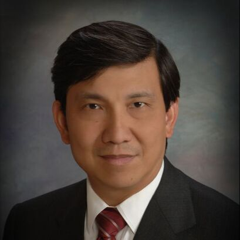
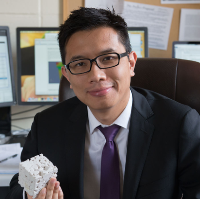
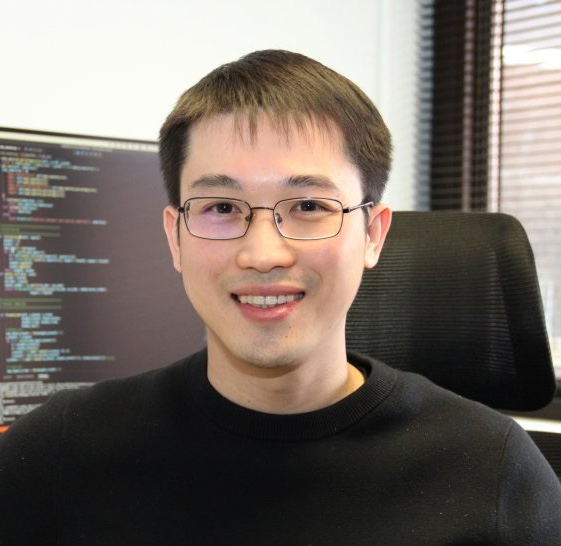
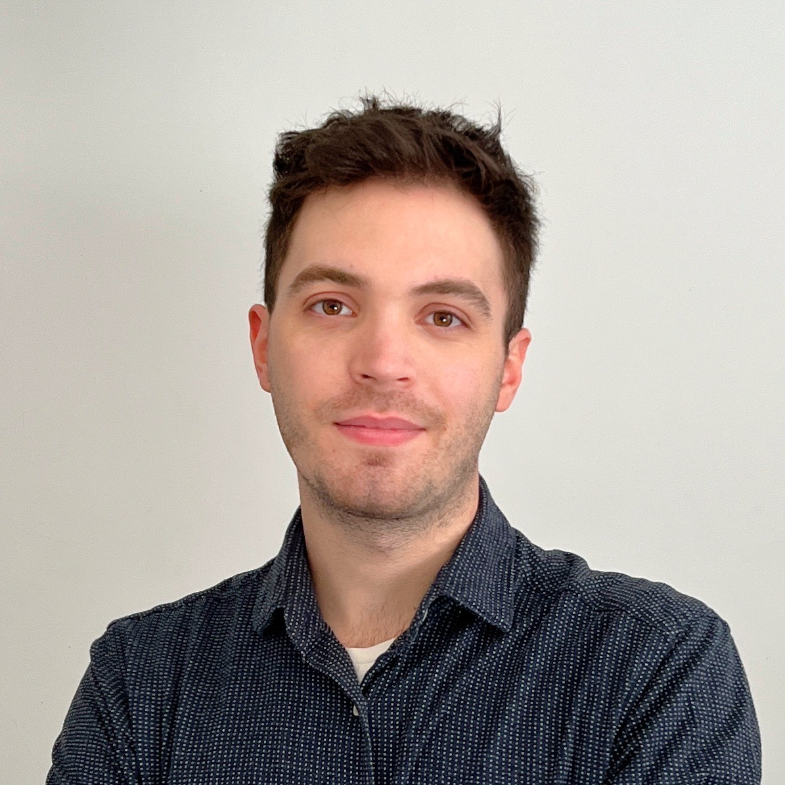

Instructors

J. S. Chen
Dept. of Structural Engineering
Founding Director, Center for Extreme Events Research
UC San Diego
J. S. Chen is the Inaugural William Prager Chair Professor and Distinguished Professor of Structural Engineering, and Professor of Mechanical and Aerospace Engineering at UC San Diego, where he also serves as Founding Director of the Center for Extreme Events Research. His research spans computational mechanics, meshfree and particle methods, and data-driven methods for solid and structural mechanics.

WaiChing Steve Sun
Dept. of Civil Engineering and Engineering Mechanics
Columbia University
WaiChing Sun is a Professor in the Department of Civil Engineering and Engineering Mechanics at Columbia University. His research focuses on computational poromechanics, machine learning for constitutive modeling, and thermodynamics-informed neural networks for inelastic materials. He is a recipient of multiple NSF and DARPA awards.

Qizhi He
Dept. of Civil, Environmental, and Geo-Engineering
University of Minnesota
Qizhi ("KaiChi") He is an Assistant Professor in the Department of Civil, Environmental, and Geo-Engineering at the University of Minnesota. His research interests include physics-informed machine learning, neural operators, and data-driven computational mechanics for solid and geomechanics applications.

Nikolaos Napoleon Vlassis
Dept. of Mechanical and Aerospace Engineering
Rutgers University
Nikolaos Napoleon Vlassis is an Assistant Professor in the Department of Mechanical and Aerospace Engineering at Rutgers University. His research focuses on generative AI for materials and structures, latent-space methods for inverse design, and agentic AI workflows for engineering computation.